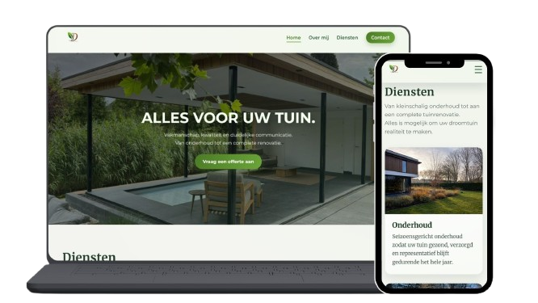

Overview
A website designed for Davids Hoveniersbedrijf, focused on presenting services, completed projects and contact options in a clear and professional way.
David's
Hoveniersbedrijf

The challenge
How might we create a trustworthy online presence that reflects the quality of the company's work and encourages potential clients to get in touch?
Research & Strategy
The project focused on understanding the needs of homeowners looking for gardening services. Competitor analysis and content structuring were used to create a clear user journey and improve findability.
Design solution
A modern website featuring a clean layout, strong imagery, clear service overviews and prominent call-to-actions. The design emphasizes reliability, craftsmanship and accessibility.
Reflection & Learnings
This project taught me the importance of clarity and structure in web design. I learned how strong information hierarchy and clear navigation can help visitors quickly find the information they need. Working with a real client also showed me how design decisions can directly support business goals and build trust with potential customers.
Toolbox
- Figma
- HTML
- CSS
- GitHub
- JavaScript
Thanks for taking a closer look at this project.